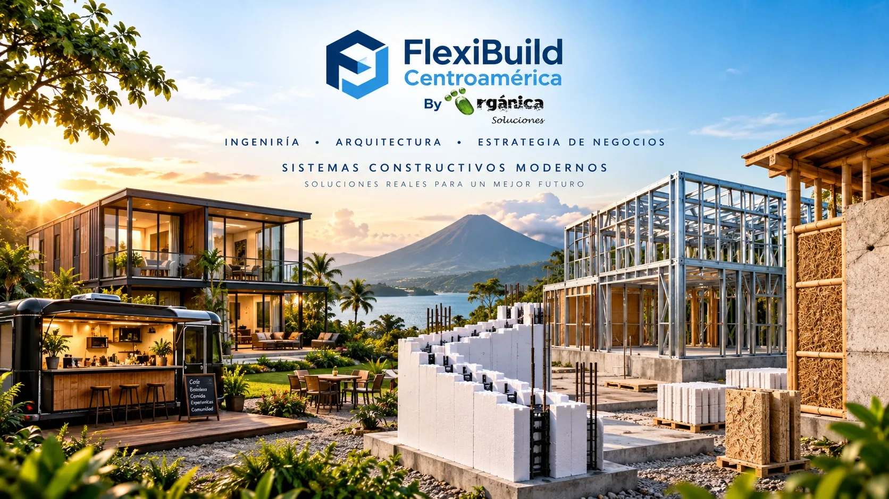

Sistema 01 · Nicaragua
Sistema Constructivo ICF
Better Block ICF®
Encofrado aislante para construir muros de concreto reforzado con aislamiento integrado. Conozca el sistema, sus componentes y sus aplicaciones.
Conocer el sistema ICF →
FlexiBuild Centroamérica
Dos soluciones principales para desarrollar proyectos de vivienda, comercio, industria y espacios especializados en Nicaragua y Centroamérica.
Sistema 01 · Nicaragua
Encofrado aislante para construir muros de concreto reforzado con aislamiento integrado. Conozca el sistema, sus componentes y sus aplicaciones.
Conocer el sistema ICF →Sistema 02 · Mercado regional
Estructuras modulares de perfiles tubulares de acero, con uniones abulonadas, soldadas o híbridas según el proyecto.
Viviendas y oficinas modulares · Food trucks y comercios rodantes · Campers y minicampers · Contenedores y vehículos modificados · Clínicas móviles · Proyectos especiales.
Conocer el sistema modular →.png)
Para profesionales y desarrolladores
Trabajamos con constructoras, desarrolladores inmobiliarios, arquitectos, ingenieros, inversionistas y clientes particulares para evaluar alternativas constructivas según el uso, el diseño y las condiciones de cada proyecto.
En Nicaragua presentamos el Sistema Constructivo ICF con Better Block ICF®, un encofrado aislante para muros de concreto reforzado. Para aplicaciones modulares, integramos el Sistema Constructivo Modular Steel Framing, basado en perfiles tubulares de acero y adaptable a diferentes necesidades de vivienda, comercio, industria y servicios.
Nicaragua · Centroamérica · Proyectos según alcance técnico y comercial
Conversemos sobre su proyectoQué desarrollamos
Partimos del uso, el sitio, el presupuesto y los requisitos técnicos para identificar una solución viable.

Alternativas para vivienda, ampliaciones y espacios habitables, sujetas a diseño y especificaciones de cada proyecto.
Conocer casas modulares →
Espacios fijos o móviles para comercio, servicios, atención al público y operaciones empresariales.
Conocer oficinas y comercios →
Configuraciones para negocios móviles, unidades de servicio y proyectos recreativos personalizados.
Conocer negocios móviles →
Evaluamos viviendas con contenedores, oficinas en contenedores, locales comerciales, bodegas y otros espacios acondicionados según el uso, el clima y las condiciones del terreno.
Conocer casas contenedor y contenedores modificados →Explore cada solución
Consulte los criterios principales de cada aplicación y envíenos los datos necesarios para evaluar su alcance.
Viviendas, oficinas, comercios y bodegas acondicionados a partir de contenedores, sujetos a evaluación técnica.
Negocios móviles y comercios rodantes
Desarrollamos el concepto, la distribución y la estructura de cada unidad según el tipo de negocio, la operación prevista, el espacio disponible y los requisitos aplicables.
FOOD TRUCKSGASTRONOMÍA
Unidades para cafeterías, hamburgueserías, pizzerías, heladerías, juguerías, repostería y otros conceptos de alimentos y bebidas. La distribución se define según equipos, flujo de trabajo, almacenamiento, ventilación y servicios.
Evaluar un food truck →COMERCIOS RODANTESCOMERCIO Y SERVICIOS
Soluciones móviles para boutiques, tiendas, puntos de venta, exhibición, cafeterías, bares, servicios y activaciones comerciales. Evaluamos mostradores, accesos, imagen de marca, instalaciones y condiciones de transporte.
Evaluar un comercio rodante → UNIDADES DE SERVICIO
UNIDADES DE SERVICIOSERVICIOS ESPECIALIZADOS
Unidades para servicios profesionales e institucionales, sujetas a revisión de requisitos sanitarios, instalaciones, accesibilidad, peso y homologación cuando corresponda.
Evaluar una unidad móvil →Cada unidad requiere una evaluación específica de chasis, cargas, estabilidad, peso total, instalaciones, ventilación, seguridad y normativa local. Las imágenes de referencia no sustituyen planos ni especificaciones de fabricación.
Ámbitos de aplicación
Casas, unidades habitacionales y espacios de uso temporal o permanente.
Locales comerciales, restaurantes, food trucks y puntos de atención.
Oficinas, instalaciones de apoyo, espacios de trabajo y soluciones industriales.
Clínicas móviles, laboratorios y aplicaciones especiales que requieren definición técnica.
Socio de desarrollo de proyectos
Trabajamos como integrador y desarrollador de oportunidades en sistemas constructivos, conectando necesidades del mercado con tecnologías, fabricantes y soluciones adecuadas para cada aplicación.
Ofrecemos sistemas constructivos a constructoras, desarrolladores inmobiliarios, empresas de bienes raíces, constructores, ingenieros, arquitectos y clientes particulares en Nicaragua y Centroamérica. La representación actual de Better Block ICF® corresponde a Nicaragua. Las soluciones del Sistema Constructivo Modular Steel Framing se fabrican en Nicaragua para Nicaragua, Costa Rica, Panamá, El Salvador, Honduras, Guatemala y mercados del Caribe, incluida República Dominicana, según requisitos técnicos, logísticos y regulatorios.
Hablemos de su proyecto →Proyectos y aplicaciones
Explore sistemas ICF, vivienda modular, soluciones móviles y proyectos especiales. Seleccione una aplicación para conocer sus características y conversar con FlexiBuild Centroamérica.

Sistema ICF para muros de concreto reforzado en proyectos de vivienda y comercio.
Ideas y soluciones de vivienda modular para evaluar según el terreno, el uso y el programa arquitectónico.

Soluciones rodantes para negocios de alimentos, bebidas y emprendimientos comerciales.
.jpg)
Viviendas, oficinas, comercios y otros espacios a partir de contenedores, además de aplicaciones en vehículos modificados.

Diseño de soluciones móviles considerando distribución, chasis y operación prevista.
Componentes que deben evaluarse según la carga, el peso y la configuración de cada unidad.
Contenido audiovisual
Explore videos y ejemplos compartidos en el canal de FlexiBuild Centroamérica.
Preguntas frecuentes
Respuestas iniciales para orientar la evaluación de cada proyecto.
Integramos soluciones modulares fijas y rodantes para vivienda, comercio, turismo, oficinas y proyectos especiales. El alcance se define según los requisitos de cada proyecto.
Es un sistema de encofrado aislante para muros de concreto reforzado. El acero de refuerzo, el concreto y los detalles constructivos se especifican conforme al diseño estructural y la normativa aplicable.
En FlexiBuild se refiere a un sistema modular basado en perfiles tubulares de acero, con uniones abulonadas, soldadas o híbridas, y también alternativas de Light Steel Framing liviano con perfiles C/U, según las necesidades y especificaciones de cada proyecto.
Food trucks, trailers, campers y minicampers, clínicas, consultorios, laboratorios, oficinas móviles, contenedores y vehículos modificados, además de otros proyectos especiales sujetos a evaluación técnica.
Sí. La línea de movilidad incluye soluciones personalizadas y la línea MiniRod Centroamérica. El minicámper Sherman M3 forma parte de la oferta descrita en la comunicación original de la empresa; la configuración y disponibilidad deben confirmarse para cada consulta.
La representación actual de Better Block ICF® corresponde a Nicaragua. Las soluciones del Sistema Constructivo Modular Steel Framing se fabrican en Nicaragua y se proyectan para exportación a Centroamérica y el Caribe, incluida República Dominicana, según cada proyecto.
Envíe el tipo de proyecto, ubicación, dimensiones aproximadas, uso y plazo previsto mediante la página de contacto. El formulario prepara un mensaje en WhatsApp para que usted lo revise y lo envíe.
Contacto
Comparta el tipo de proyecto, ubicación, dimensiones aproximadas y etapa en que se encuentra. Podremos orientar la siguiente evaluación.
Ticuantepe, Nicaragua